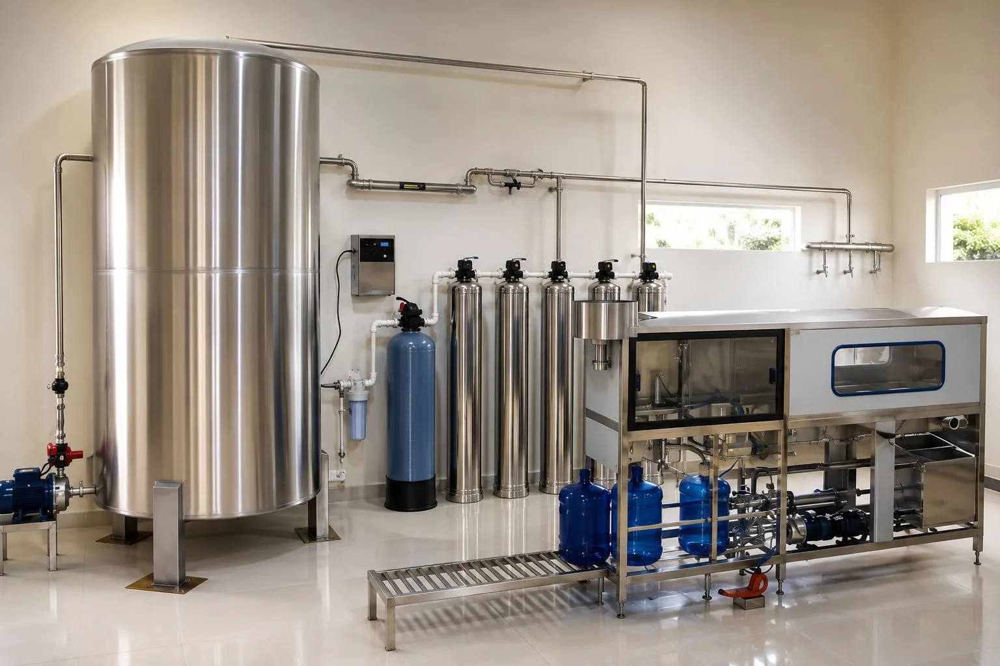
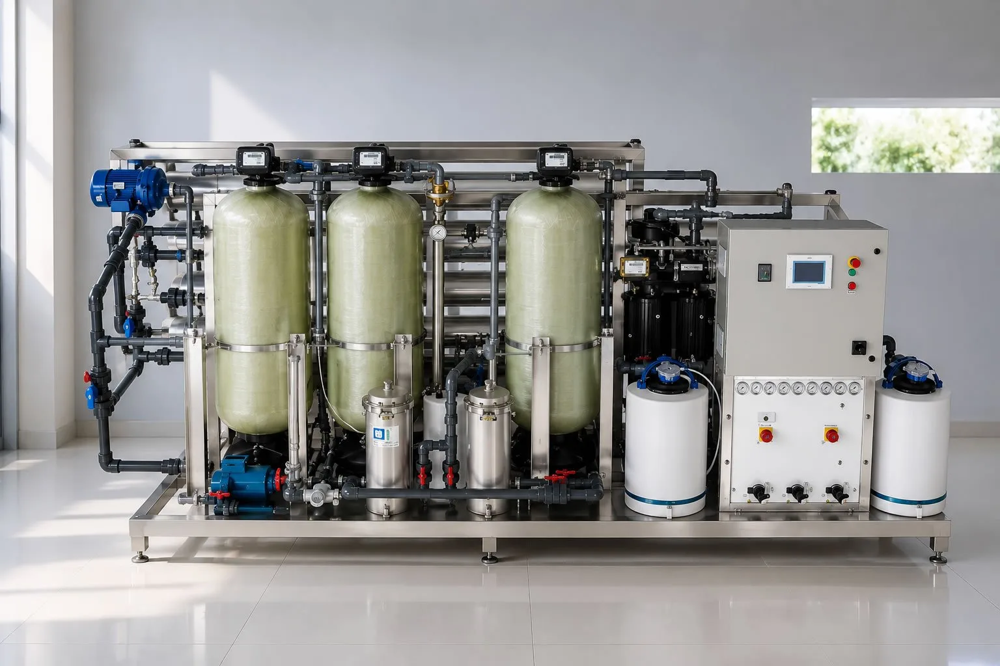

Calidad constante
Agua estable para mantener sabor, pureza y composición uniforme en cada producto.
Industrial
“Precisión en cada gota para productos de máxima calidad”

Optimizá tu producción con sistemas de ósmosis inversa industrial que aseguran una remoción de sólidos totales disueltos superior al 99%.
Diseñamos infraestructuras de alto caudal bajo protocolos de calidad, ideales para conservar una composición química constante del agua.
Agua estable para mantener sabor, pureza y composición uniforme en cada producto.
Sistemas pensados para reducir impurezas, optimizar rendimiento y mejorar la producción.
Control microbiológico y reducción de sedimentos para procesos industriales exigentes.

En plantas embotelladoras, envasadoras de bebidas, jugos y elaboradoras de cerveza, el agua es el componente principal y el que define el resultado final.
Su pureza, estabilidad y composición química son claves para lograr productos con sabor uniforme, seguros y de alta calidad.
Nuestros sistemas de tratamiento garantizan la eliminación de impurezas, control microbiológico y una composición constante, permitiendo procesos más eficientes y estandarizados.
Implementá sistemas de purificación de alto rendimiento para bebidas, alimentos, jugos, laboratorios y procesos industriales.